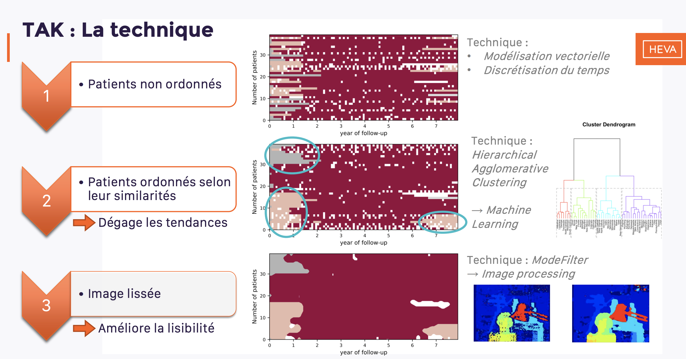

Détecter des épidémies (Exemple du Coronavirus)

BlueDot est une entreprise canadienne qui cherche à prevoir le developpement une maladie infectueuse en étudiant, en autre, les flux de données circulant sur Internet.
En effet, le 31 décembre, alors que le virus Covid-19 n'était pas encore découvert, l'algorithme de la compagnie a relevé les mots clés “pneumonia” et “cause unknown”. BlueDot commence donc à contacter ses clients asiatiques après avoir creusé cette piste et trouvé 27 personnes souffrant d'une sorte de pneumonie, tous liés avec le marché de Wuhan.
L'algorithme de BlueDot
Fréquence et type de données étudiées
L'algorithme scanne le web toutes les 15 minutes et ce 24h/24. Il étudie les rapports officiels, les forums des professionnels de santé , les sources d'actualités en ligne, les mots clés des navigateurs de recherche. Il peut traiter 65 langues et peut rechercher plus de 150 types de maladie.
Les données de contexte supplémentaires
Pour mieux comprendre et prédire le comportement de l'épidémie et ses futurs mouvements, l'algorithme prend également en compte les emplacements des aéroports, les itinéraires aériens, les données climatiques, mais aussi les flux de moustiques ou d'animaux.
BlueDot avait ainsi prédit les zones où le virus s'est répendu le plus rapidement.
Les clients
Les clients de BlueDot sont principalement les compagnies aériennes, les hôpitaux et les agences gouvernementales. L'entreprise a déjà fait ses preuves puisqu'elle avait, en 2016, prédit que le virus Zika se répendrait en Floride, 6 mois avant que cela n'ait lieu.
L'usage du machine learning est particulièrement utile pour ce genre de situation car il peut identifier des patterns que de seuls humains ne peuvent découvrir (trop large jeu de données, facteurs, etc...).
Visualisation de séquences de traitement
HEVA, une entreprise lyonnaise spécialisée dans l'analyse de données de santé, a présenté une nouvelle methodologie en octobre 2019. Cette dernière est tirée de l'intelligence artificielle et permet de décrire les séquences de traitement parmis une cohorte de patients.
Une application concrète de cette technique est proposée dans cette étude : Analyses des séquences de traitements à partir du SNIIRAM : cas d’étude des incidents 2013 du VIH .
L'étude se déroule en 4 étapes:
Choix des patients
Les scientifiques définissent des critères d'inclusion et d'exclusion pour choisir quels patients tirés de la base SNIIRAM seront étudiés (possibilité de suivi sur 2 ans minimum, au moins une consomation de soin sur cette période, au moins une hospitalisation, etc). Ici, ils en selectionnent 3 373.
Définition des objectifs et des contraintes de l'étude
L'objectif est d'obtenir une vision temporelle précise et lisible de l'enchaînement des traitements pour l'ensemble de la cohorte. Il faut que cette visualisation permette de répondre facilement aux questions du commanditaire de l'étude : Combien de temps les patients sont-ils traités ? Quand arrêtent-ils leur traitement?
Choix de la technique
Les scientifiques ont à leur disposition plusieurs méthodes ayant déjà fait leurs preuves : « Sankey Diagram », « TraMineR », Le graphe « soleil ». Cependant, aucune d'entre elle ne permet de répondre complètement aux points énoncés ci-dessus.
Technique retenue
C'est, d'après la définition des besoins faite précédement, la technique TAK (Time sequence Analysis through K-clustering(@HEVA)) qui sera retenue (explication ci-dessous).
La technique TAK

Les 3 étapes du TAK
Grouper
Regrouper les patients par similarité afin de dégager des tendances. Dans l'image ci-dessous, un seul groupe de patient est représenté. On utilise ici un algorithme de machine learning non supervisé : Le clustering agglomeratif hierarchique.
Ordonner
On affine le dégagement de tendance au sein même d'un groupe et on place les frises les unes en dessous des autres en fonction de leur similarité. On utilise là encore le clustering hierarchique.
Lisser
Afin de rendre les informations plus intelligibles, on applique un flou (grâce à de l'image processing et des principe de Data Vizualisation). On réalise bien entendu cela sur chaque groupe.
Ce type d'étude apporte une aide cruciale au personnel de santé et au specialiste. Le premier avantage est que les analyse sont faites sur un très gros volume de données (nationales et non à l'échelle d'un hôpital ou d'une clinique). Ainsi, les médecins disposent de conclusions plus représentatives que celles qu'ils peuvent tirer de leur environnement de travail quotidien. De plus, l'intérêt d'une technique comme TAK est de proposer une visualisation propre et très facilement intelligible. Les médecins gagnent alors du temps, n'ont plus besoin de lire un rapport contenant de nombreuses statistiques et peuvent obtenir les informations dont ils ont besoin en regardant seulement des visualisations de données efficaces.